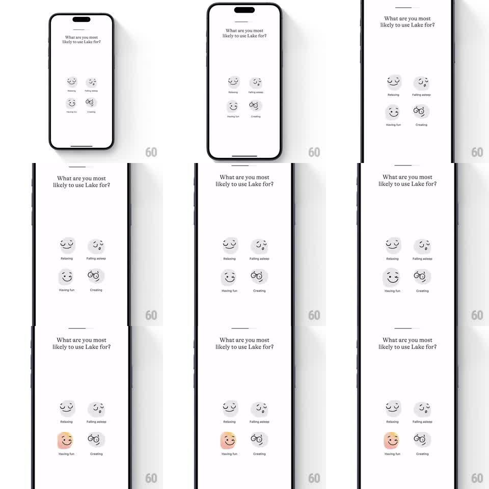

Media
Frame-by-frame

Rebuild this interaction 1:1: Lake's onboarding interest picker - a 2x2 grid of sketchy illustrated options where tapping one fills its circle with an organic ink-bleed wash of color and gives the line icon a playful wiggle.

Rebuild this interaction 1:1: Lake's onboarding interest picker - a 2x2 grid of sketchy illustrated options where tapping one fills its circle with an organic ink-bleed wash of color and gives the line icon a playful wiggle. ## Integration Integration: stack-agnostic spec - springs given as stiffness/damping, timed motions as duration + curve; map every value to your framework and animation library of choice. ## Scene White sheet-style screen titled "What are you most likely to use Lake for?", 2x2 grid of circular options (Relaxing, Falling asleep, Having fun, Creating), each a light-gray circle with a wobbly hand-drawn black icon and label beneath. ## Motion spec Pattern: tap feedback with organic fill. - Rest: circle fill #F2F2F2-ish gray, icon black line. - On tap: a peach/skin-tone wash floods the circle from the tap point as an irregular ink-bleed shape (not a clean circle) over ~350ms, ease-out, edges blotchy. - Icon wiggles: rotate +/- 4deg, 2-3 cycles over ~300ms, like the sketch shook loose. - Other options stay put; tapped state persists as selected. ## Calibration - The bleed shape should be slightly different per tap (randomized blob) - uniformity reads as a plain fill. - Wiggle is small and quick; it punctuates, it doesn't perform. ## Reduced motion Fill crossfades in (150ms), no wiggle. ## Don't miss - Fill spreads from the touch point, not the center. - The sketchy icon style (wobbly strokes) must survive the fill - don't swap to a solid glyph.